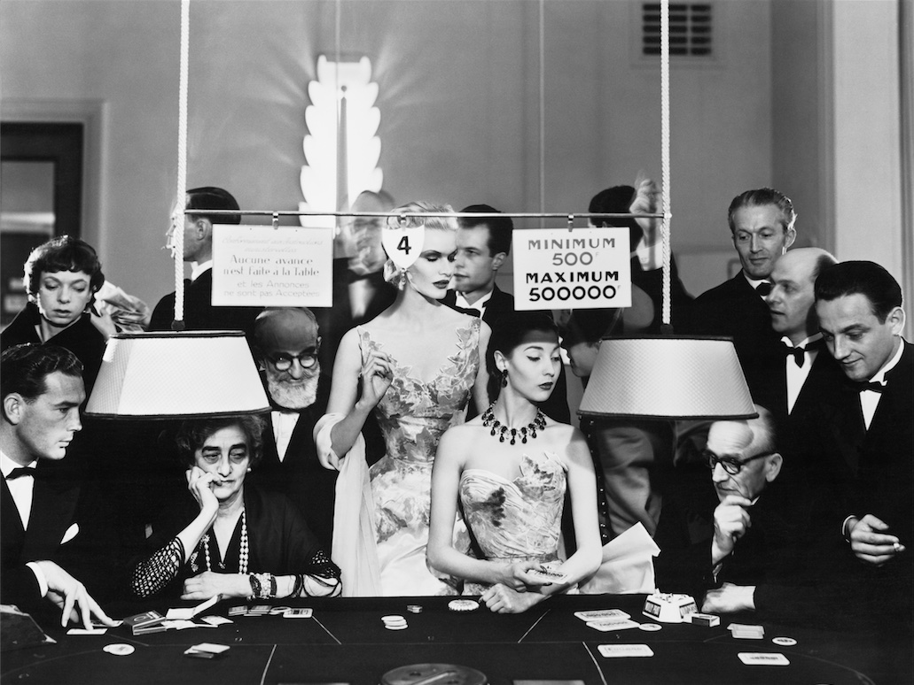
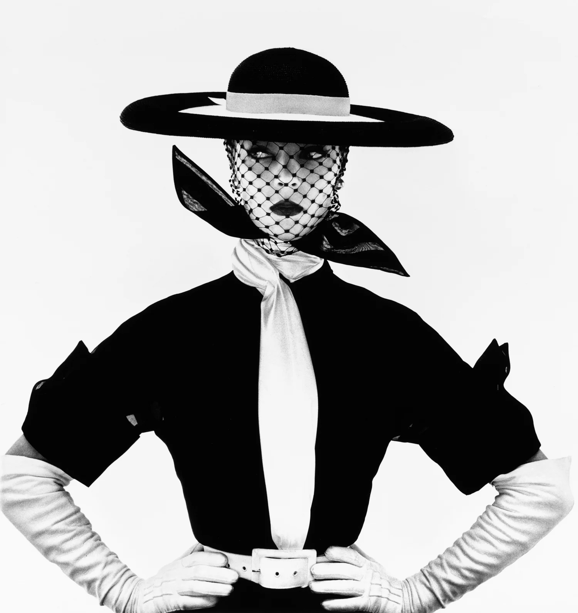

Harmonic Collection

Richard Avedon — Sunny Harnett and Alla, evening dresses by Balmain. August 1954.

Irving Penn, Vogue cover (black & white), 1950.Irving Penn, Harlequin Dress, New York, 1950.Lillian Bassman, The Cost of Living, Harper’s Bazaar, March 1950.Norman Parkinson — Jean Patchett in Jean Dessès, American Vogue, Apr 1, 1950.Richard Avedon, Carmen (Homage to Munkacsi), Cardin coat, Paris, Aug 1957.Norman Parkinson, Fuchsia – for Autumn Brilliance, British Vogue, Aug 1957.Richard Avedon — Maxim’s, Paris, Aug 1959 (Balmain, Dior, Patou).William Klein — Tatiana and Marie-Rose with Camels, Morocco, 1958.